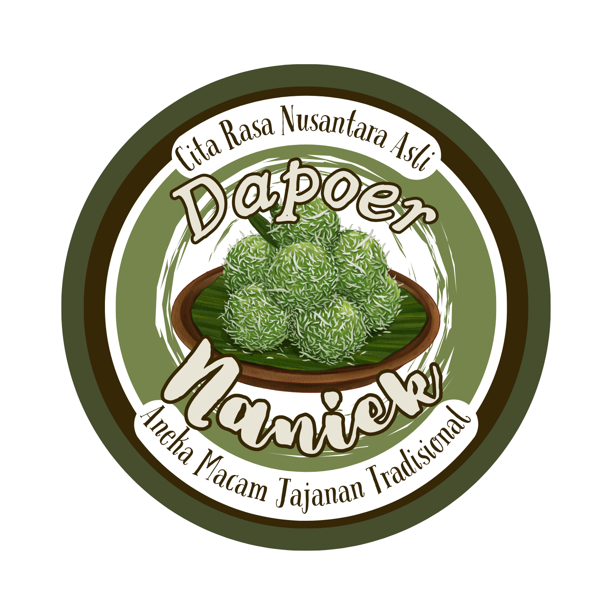

Selamat Datang di Dapoer Naniek
Kami menyajikan jajanan tradisional Indonesia yang lezat dan berkualitas. Kami berkomitmen untuk menjaga resep asli dan menggunakan bahan-bahan terbaik untuk setiap produk yang kami sajikan.

Kami menyajikan jajanan tradisional Indonesia yang lezat dan berkualitas. Kami berkomitmen untuk menjaga resep asli dan menggunakan bahan-bahan terbaik untuk setiap produk yang kami sajikan.